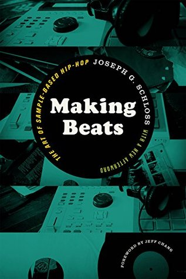

Books Blog

50 Artists: Highlights of The Broad Collection:
For decades, art patrons and philanthropists Eli and Edythe Broad have sought to foster public appreciation of postwar and contemporary art. Before founding The Broad museum in Los Angeles, their collection was made accessible by loaning artworks to institutions around the world through The Broad Art Foundation. Since 1984, more than 8,600 loans from The Broad collection have been made to over 500 museums and galleries.

Old College Comics Presents:
Nine stories spanning all types of genres to bring you an anthology of graphic proportions. Sure, the comics are in black and white, but they are pretty! Old College Comics Presents features vikings, ghosts, gods, war, aliens, mythical creatures, a superpowered Amish boy, three kids trapped inside a whale, and I think just one more by my count! writer and illustrator Mari Andrew explores all the emotions that make up a life, in the process offering insights about trauma and healing, the meaning of home and the challenges of loneliness.
Getting There: A Workbook for Growing Up:
If there's anyone who knows the trials and tribulations of becoming an adult, it's Mari Andrew. Her Instagram illustrations that garner the most engagement focus on heartbreak, career changes, and self-discovery. This guided journal captures those universal themes and prompts you to document your own path to adulthood. Explore and reflect upon important moments in your life with Maris imaginative prompts and searching questions as your guide.

Making Beats: The Art of Sample-Based Hip-Hop:
Based on ten years of research among hip-hop producers, Making Beats was the first work of scholarship to explore the goals, methods, and values of a surprisingly insular community. Focusing on a variety of subjects—from hip-hop artists’ pedagogical methods to the Afrodiasporic roots of the sampling process to the social significance of “digging” for rare records—Joseph G. Schloss examines the way hip-hop artists have managed to create a form of expression that reflects their creative aspirations, moral beliefs, political values, and cultural realities. This second edition of the book includes a new foreword by Jeff Chang and a new afterword by the author.

Can't Stop Won't Stop: A Hip-Hop History:
From award-winning author Jeff Chang, Can't Stop Won't Stop is the story of hip-hop, a generation-defining movement and the music that transformed American politics and culture forever. Hip hop is one of the most dominant and influential cultures in America, giving new voice to the younger generation. It defines a generation's worldview. Exploring hip hop's beginnings up to the present day, Jeff Chang and Dave "Davey D" Cook provide a provocative look into the new world that the hip hop generation has created. Based on original interviews with DJs, b-boys, rappers, activists, and gang members, with unforgettable portraits of many of hip hops forebears.
My Inner Sky: On embracing day, night and all the times in between:
From New York Times bestselling author Mari Andrew, a collection of essays and illustrations, divided into phases of the sky--twilight, golden hour, night, and dawn--that serves as a loyal companion for lifes curveballsA whole, beautiful life is only made possible by the wide spectrum of feelings that exist between joy and sorrow. In this insightful and warm book, writer and illustrator Mari Andrew explores all the emotions that make up a life, in the process offering insights about trauma and healing, the meaning of home and the challenges of loneliness, finding love in the most unexpected of places.